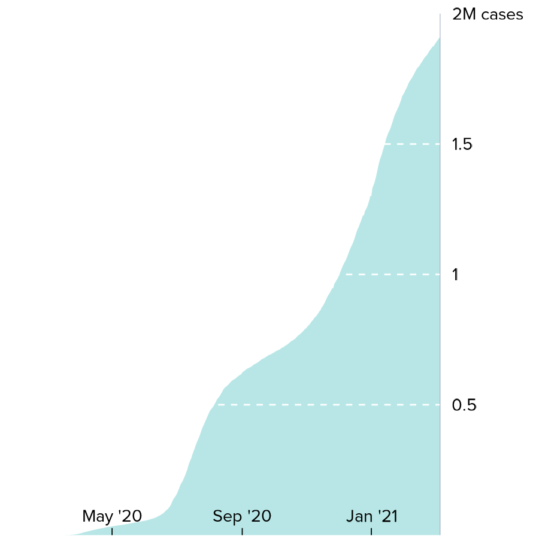
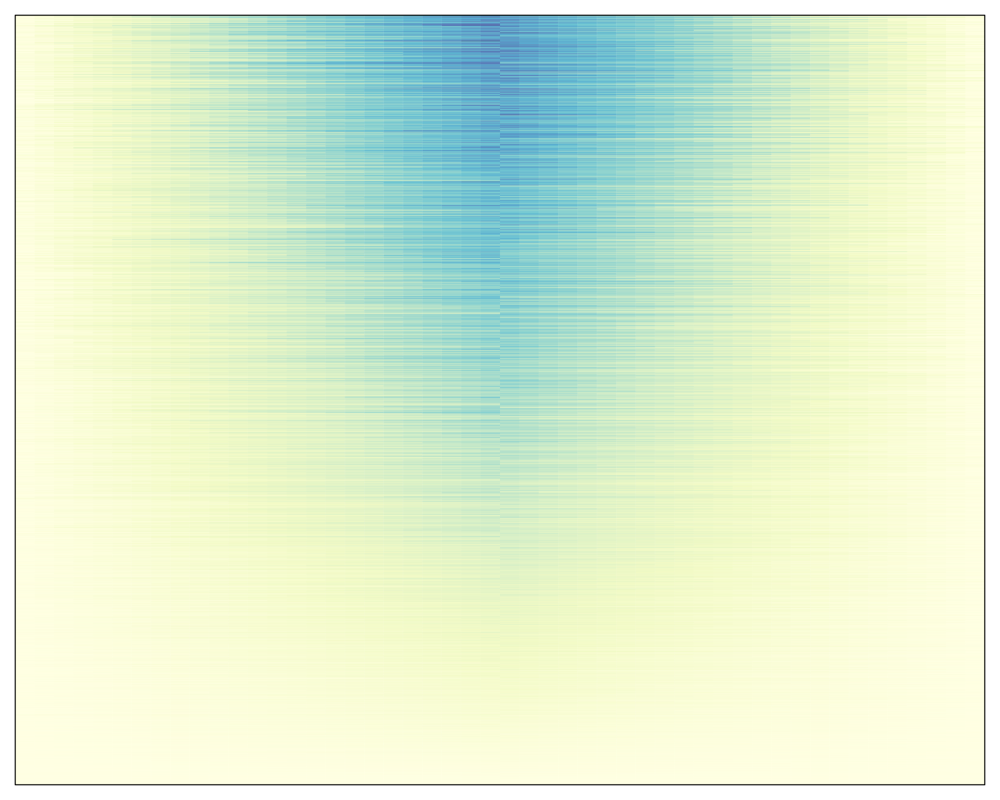
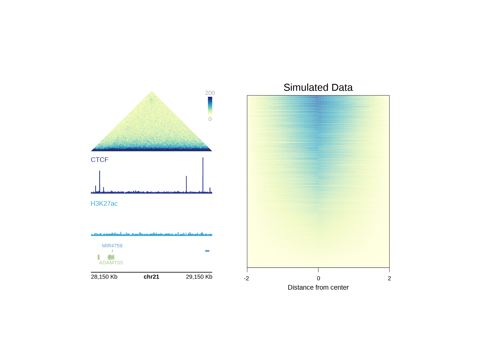

Incorporating ggplots and other grid-based Bioconductor visualizations
Source: vignettes/guides/incorporating_ggplots.Rmd
incorporating_ggplots.RmdIn addition to its numerous built-in genomic functions, plotgardener can size and place ggplots and other grid-based visualizations within a plotgardener layout. Rather than arranging these plots in a relative manner, plotgardener can make and place these plots in absolute sizes and locations. This makes it simple and intuitive to make complex and combined plotgardener,ggplot, and other grid plot arrangements beyond a basic grid-style layout.
ggplots
Let’s say we wanted to make a complex multi-panel ggplot about COVID-19 data consisting of the following plots:
- A United States map depicting COVID-19 cases:
library(ggplot2)
library(scales)
data("COVID_USA_cases")
US_map <- ggplot(COVID_USA_cases, aes(long, lat, group = group)) +
theme_void() +
geom_polygon(aes(fill = cases_100K), color = "white", size = 0.3) +
scale_fill_distiller(
palette = "YlGnBu", direction = 1,
labels = label_number(suffix = "", scale = 1e-3, accuracy = 1)
) +
theme(
legend.position = "left",
legend.justification = c(0.5, 0.95),
legend.title = element_blank(),
legend.text = element_text(size = 7),
legend.key.width = unit(0.3, "cm"),
legend.key.height = unit(0.4, "cm"),
plot.title = element_text(
hjust = 0, vjust = -1,
family = "ProximaNova", face = "bold",
size = 12
),
plot.title.position = "plot"
) +
labs(title = "Thousands of COVID-19 Cases per 100,000 People") +
coord_fixed(1.3)
print(US_map)
- Line plots showing the accumulation of COVID-19 cases over time:
data("COVID_NY_FL_tracking")
# Format y-labels
ylabels <- seq(0, 2000000, by = 500000) / 1e6
ylabels[c(3, 5)] <- round(ylabels[c(3, 5)], digits = 0)
ylabels[c(2, 4)] <- round(ylabels[c(2, 4)], digits = 1)
ylabels[5] <- paste0(ylabels[5], "M cases")
ylabels[1] <- ""
casesNY <- COVID_NY_FL_tracking[COVID_NY_FL_tracking$state == "new york", ]
casesNYpoly <- rbind(
casesNY,
data.frame(
"date" = as.Date("2021-03-07"),
"state" = "new york",
"caseIncrease" = -1 * sum(casesNY$caseIncrease)
)
)
cases_NYline <- ggplot(
casesNY,
aes(x = date, y = cumsum(caseIncrease))
) +
geom_polygon(data = casesNYpoly, fill = "#B8E6E6") +
scale_x_date(
labels = date_format("%b '%y"),
breaks = as.Date(c("2020-05-01", "2020-09-01", "2021-01-01")),
limits = as.Date(c("2020-01-29", "2021-03-07")),
expand = c(0, 0)
) +
scale_y_continuous(labels = ylabels, position = "right", expand = c(0, 0)) +
geom_hline(
yintercept = c(500000, 1000000, 1500000, 2000000),
color = "white", linetype = "dashed", size = 0.3
) +
coord_cartesian(ylim = c(0, 2000000)) +
theme(
panel.background = element_rect(fill = "transparent", color = NA),
text = element_text(family = "ProximaNova"),
panel.grid = element_blank(),
panel.border = element_blank(),
plot.background = element_rect(fill = "transparent", color = NA),
axis.line.x.bottom = element_blank(),
axis.line.y = element_line(size = 0.1, color = "#8F9BB3"),
axis.text.x = element_text(
size = 7, hjust = 0.5,
margin = margin(t = -10), color = "black"
),
axis.title.x = element_blank(),
axis.ticks.x = element_line(size = 0.2, color = "black"),
axis.title.y = element_blank(),
axis.text.y = element_text(size = 7, color = "black"),
axis.ticks.y = element_blank(),
axis.ticks.length.x.bottom = unit(-0.1, "cm"),
plot.title = element_text(size = 8, hjust = 1),
plot.title.position = "plot"
)
print(cases_NYline)
casesFL <- COVID_NY_FL_tracking[COVID_NY_FL_tracking$state == "florida", ]
casesFLpoly <- rbind(
casesFL,
data.frame(
"date" = as.Date("2021-03-07"),
"state" = "florida",
"caseIncrease" = -1 * sum(casesFL$caseIncrease)
)
)
cases_FLline <- ggplot(
casesFL,
aes(x = date, y = cumsum(caseIncrease))
) +
geom_polygon(data = casesFLpoly, fill = "#B8E6E6") +
scale_x_date(
labels = date_format("%b '%y"),
breaks = as.Date(c("2020-05-01", "2020-09-01", "2021-01-01")),
limits = as.Date(c("2020-01-29", "2021-03-07")),
expand = c(0, 0)
) +
scale_y_continuous(labels = ylabels, position = "right", expand = c(0, 0)) +
geom_hline(
yintercept = c(500000, 1000000, 1500000, 2000000),
color = "white", linetype = "dashed", size = 0.3
) +
coord_cartesian(ylim = c(0, 2000000)) +
theme(
panel.background = element_rect(fill = "transparent", color = NA),
plot.background = element_rect(fill = "transparent", color = NA),
text = element_text(family = "ProximaNova"),
panel.grid = element_blank(),
panel.border = element_blank(),
axis.line.x.bottom = element_blank(),
axis.line.y = element_line(size = 0.1, color = "#8F9BB3"),
axis.title = element_blank(),
axis.text.y = element_text(size = 7, color = "black"),
axis.text.x = element_text(
size = 7, hjust = 0.5,
margin = margin(t = -10), color = "black"
),
axis.ticks = element_line(color = "black", size = 0.2),
axis.ticks.y = element_blank(),
axis.ticks.length.x.bottom = unit(-0.1, "cm"),
plot.title = element_text(size = 8, hjust = 1),
plot.title.position = "plot"
)
print(cases_FLline)
- Pie charts of COVID-19 vaccination status:
data("COVID_NY_FL_vaccines")
vaccines_NYpie <- ggplot(
COVID_NY_FL_vaccines[COVID_NY_FL_vaccines$state == "new york", ],
aes(x = "", y = value, fill = vax_group)
) +
geom_bar(width = 1, stat = "identity") +
theme_void() +
scale_fill_manual(values = c("#FBAA7E", "#F7EEBF", "#FBCB88")) +
coord_polar(theta = "y", start = 2.125, clip = "off") +
geom_text(aes(
x = c(1.9, 2, 1.9),
y = c(1.65e7, 1.3e6, 7.8e6),
label = paste0(percent, "%")
),
size = 2.25, color = "black"
) +
theme(
legend.position = "none",
plot.title = element_text(
hjust = 0.5, vjust = -3.5, size = 10,
family = "ProximaNova", face = "bold"
),
text = element_text(family = "ProximaNova")
) +
labs(title = "New York")
print(vaccines_NYpie)
vaccines_FLpie <- ggplot(
COVID_NY_FL_vaccines[COVID_NY_FL_vaccines$state == "florida", ],
aes(x = "", y = value, fill = vax_group)
) +
geom_bar(width = 1, stat = "identity") +
scale_fill_manual(values = c("#FBAA7E", "#F7EEBF", "#FBCB88")) +
theme_void() +
coord_polar(theta = "y", start = pi / 1.78, clip = "off") +
geom_text(aes(
x = c(1.95, 2, 1.9),
y = c(1.9e7, 1.83e6, 9.6e6),
label = paste0(percent, "%")
),
color = "black",
size = 2.25
) +
theme(
legend.position = "none",
plot.title = element_text(
hjust = 0.5, vjust = -4, size = 10,
family = "ProximaNova", face = "bold"
),
text = element_text(family = "ProximaNova")
) +
labs(title = "Florida")
print(vaccines_FLpie)We can now easily overlap and size all these ggplots by passing our saved plot objects into plotGG():
pageCreate(width = 9.5, height = 3.5, default.units = "inches")
plotGG(
plot = US_map,
x = 0.1, y = 0,
width = 6.5, height = 3.5, just = c("left", "top")
)
plotGG(
plot = cases_NYline,
x = 6.25, y = 1.8,
width = 3.025, height = 1.4, just = c("left", "bottom")
)
plotGG(
plot = cases_FLline,
x = 6.25, y = 3.5,
width = 3.025, height = 1.4, just = c("left", "bottom")
)In particular, plotgardener makes it easy to resize and place our pie charts in a layout that overlaps our line plots without it affecting the sizing of the other plots on the page:
plotGG(
plot = vaccines_NYpie,
x = 6.37, y = -0.05,
width = 1.45, height = 1.45, just = c("left", "top")
)
plotGG(
plot = vaccines_FLpie,
x = 6.37, y = 1.67,
width = 1.45, height = 1.45, just = c("left", "top")
)We can also easily add additional elements to further enhance our complex ggplot arrangments, like a precise placement of text labels:
plotText(
label = c("not", "partially", "fully vaccinated"),
fontfamily = "ProximaNova", fontcolor = "black", fontsize = 7,
x = c(6.58, 7.3, 7.435),
y = c(0.74, 1.12, 0.51), just = c("left", "bottom")
)
plotText(
label = c("not", "partially", "fully vaccinated"),
fontfamily = "ProximaNova", fontcolor = "black", fontsize = 7,
x = c(6.58, 7.39, 7.435),
y = c(2.47, 2.75, 2.2), just = c("left", "bottom")
)
plotText(label = paste("Sources: The COVID Tracking Project;",
"Johns Hopkins Center for Civic Impact"),
fontfamily = "ProximaNova", fontcolor = "black",
fontsize = 7, fontface = "italic",
x = 0.15, y = 3.45, just = c("left", "bottom"))We are then left with a complex, precise, and elegant arrangement of ggplots as if we had arranged them together with graphic design software:

ComplexHeatmap
Heatmaps are an integral visualization to many multi-panel genomic visualizations. Existing Bioconductor packages like ComplexHeatmap provide excellent methods to produce such heatmaps. Since these plots are also based on grid graphics, it is possible to incorporate them into plotgardener figure arrangements.
For example, let’s say we made a heatmap representing the density of ChIP-seq data at a particular peak:
library(ComplexHeatmap)
library(purrr)
library(RColorBrewer)
# Simulated data
genmat <- map(
1:2000,
function(i) {
c(sort(abs(rnorm(50)))[1:25], rev(sort(abs(rnorm(50)))[1:25])) * i/5000
}
) %>% do.call(rbind, .)
genmat <- genmat[nrow(genmat):1,]
Heatmap(genmat, col = colorRampPalette(brewer.pal(n = 9, "YlGnBu"))(9),
border = "black",
border_gp = gpar(lwd = 0.5),
show_heatmap_legend = FALSE,
cluster_rows = FALSE, cluster_columns = FALSE)
We can capture this heatmap with the grid function grid.grabExpr():
library(grid)
heatmap <- grid.grabExpr(draw(Heatmap(genmat,
col = colorRampPalette(brewer.pal(n = 9, "YlGnBu"))(9),
border = "black",
border_gp = gpar(lwd = 0.5),
show_heatmap_legend = FALSE,
cluster_rows = FALSE, cluster_columns = FALSE)))We can now pass this object into the plotGG function and incorporate the heatmap into a plotgardener layout with additional figure elements made by plotgardener:
data("GM12878_HiC_10kb")
data("GM12878_ChIP_CTCF_signal")
data("GM12878_ChIP_H3K27ac_signal")
library("org.Hs.eg.db")
library("TxDb.Hsapiens.UCSC.hg19.knownGene")
## Create page
pageCreate(
width = 6, height = 4, default.units = "inches")
params <- pgParams(chrom = "chr21", chromstart = 28150000, chromend = 29150000,
assembly = "hg19",
x = 0.5, width = 2, default.units = "inches")
ctcf_range <- pgParams(range = c(0, 77),
assembly = "hg19")
hk_range <- pgParams(range = c(0, 32.6),
assembly = "hg19")
hic_gm <- plotHicTriangle(data = GM12878_HiC_10kb, params = params,
zrange = c(0, 200), resolution = 10000,
y = 1.5, height = 1.25, just = c("left", "bottom"))
annoHeatmapLegend(plot = hic_gm, fontsize = 7,
x = 2.5, y = 0.5, width = 0.07, height = 0.5,
just = c("right", "top"), default.units = "inches")
ctcf_gm <- plotSignal(data = GM12878_ChIP_CTCF_signal, params = c(params, ctcf_range),
fill = "#253494", linecolor = "#253494",
y = 1.6, height = 0.6)
plotText(label = "CTCF", fontcolor = "#253494", fontsize = 8,
x = 0.5, y = 1.6, just = c("left","top"), default.units = "inches")
hk_gm <- plotSignal(data = GM12878_ChIP_H3K27ac_signal, params = c(params, hk_range),
fill = "#37a7db", linecolor = "#37a7db",
y = 2.3, height = 0.6, just = c("left", "top"))
plotText(label = "H3K27ac", fontcolor = "#37a7db", fontsize = 8,
x = 0.5, y = 2.4, just = c("left","bottom"), default.units = "inches")
genes_gm <- plotGenes(params = params, stroke = 1, fontsize = 6,
strandLabels = FALSE,
y = 3, height = 0.4)
annoGenomeLabel(plot = genes_gm, params = params,
scale = "Kb", fontsize = 7,
y = 3.5, digits = 0)
## Add ComplexHeatmap
gg_heatmap <- plotGG(
plot = heatmap,
x = 3, y = 0.5,
width = 2.5, height = 3
)
seekViewport(name = "heatmap_matrix_2")
grid.xaxis(at = c(0, 0.5, 1), label = FALSE, gp = gpar(lwd = 0.5))
seekViewport(name = "page")
plotText(label = "Simulated Data", x = 4.25, y = 0.5,
fontsize = 12, just = "bottom")
plotText(label = c(-2, 0, 2), x = c(3.065, 4.255, 5.425),
y = 3.6, fontsize = 7)
plotText(label = "Distance from center", x = 4.25,
y = 3.75, fontsize = 8)
## Hide page guides
pageGuideHide()
Session Info
sessionInfo()
#> R version 4.1.2 (2021-11-01)
#> Platform: x86_64-apple-darwin17.0 (64-bit)
#> Running under: macOS Big Sur 10.16
#>
#> Matrix products: default
#> BLAS: /Library/Frameworks/R.framework/Versions/4.1/Resources/lib/libRblas.0.dylib
#> LAPACK: /Library/Frameworks/R.framework/Versions/4.1/Resources/lib/libRlapack.dylib
#>
#> locale:
#> [1] en_US.UTF-8/en_US.UTF-8/en_US.UTF-8/C/en_US.UTF-8/en_US.UTF-8
#>
#> attached base packages:
#> [1] stats4 grid stats graphics grDevices utils datasets
#> [8] methods base
#>
#> other attached packages:
#> [1] TxDb.Hsapiens.UCSC.hg19.knownGene_3.2.2
#> [2] GenomicFeatures_1.46.1
#> [3] GenomicRanges_1.46.1
#> [4] GenomeInfoDb_1.30.0
#> [5] org.Hs.eg.db_3.14.0
#> [6] AnnotationDbi_1.56.2
#> [7] IRanges_2.28.0
#> [8] S4Vectors_0.32.3
#> [9] Biobase_2.54.0
#> [10] BiocGenerics_0.40.0
#> [11] RColorBrewer_1.1-2
#> [12] purrr_0.3.4
#> [13] ComplexHeatmap_2.10.0
#> [14] scales_1.1.1
#> [15] ggplot2_3.3.5
#> [16] showtext_0.9-4
#> [17] showtextdb_3.0
#> [18] sysfonts_0.8.5
#> [19] plotgardenerData_1.0.0
#> [20] plotgardener_1.0.8
#>
#> loaded via a namespace (and not attached):
#> [1] colorspace_2.0-2 rjson_0.2.20
#> [3] ellipsis_0.3.2 rprojroot_2.0.2
#> [5] circlize_0.4.13 XVector_0.34.0
#> [7] GlobalOptions_0.1.2 fs_1.5.1
#> [9] clue_0.3-60 farver_2.1.0
#> [11] bit64_4.0.5 fansi_0.5.0
#> [13] xml2_1.3.3 codetools_0.2-18
#> [15] doParallel_1.0.16 cachem_1.0.6
#> [17] knitr_1.36 jsonlite_1.7.2
#> [19] Rsamtools_2.10.0 dbplyr_2.1.1
#> [21] cluster_2.1.2 png_0.1-7
#> [23] compiler_4.1.2 httr_1.4.2
#> [25] assertthat_0.2.1 Matrix_1.3-4
#> [27] fastmap_1.1.0 prettyunits_1.1.1
#> [29] htmltools_0.5.2 tools_4.1.2
#> [31] gtable_0.3.0 glue_1.5.1
#> [33] GenomeInfoDbData_1.2.7 dplyr_1.0.7
#> [35] rappdirs_0.3.3 Rcpp_1.0.7
#> [37] jquerylib_0.1.4 pkgdown_2.0.0
#> [39] vctrs_0.3.8 Biostrings_2.62.0
#> [41] strawr_0.0.9 rtracklayer_1.54.0
#> [43] iterators_1.0.13 xfun_0.28
#> [45] stringr_1.4.0 plyranges_1.14.0
#> [47] lifecycle_1.0.1 restfulr_0.0.13
#> [49] XML_3.99-0.8 zlibbioc_1.40.0
#> [51] hms_1.1.1 ragg_1.2.0
#> [53] MatrixGenerics_1.6.0 parallel_4.1.2
#> [55] SummarizedExperiment_1.24.0 yaml_2.2.1
#> [57] curl_4.3.2 memoise_2.0.1
#> [59] yulab.utils_0.0.4 sass_0.4.0
#> [61] biomaRt_2.50.1 stringi_1.7.6
#> [63] RSQLite_2.2.8 highr_0.9
#> [65] BiocIO_1.4.0 desc_1.4.0
#> [67] foreach_1.5.1 filelock_1.0.2
#> [69] BiocParallel_1.28.3 shape_1.4.6
#> [71] rlang_0.4.12 pkgconfig_2.0.3
#> [73] systemfonts_1.0.3 matrixStats_0.61.0
#> [75] bitops_1.0-7 evaluate_0.14
#> [77] lattice_0.20-45 GenomicAlignments_1.30.0
#> [79] labeling_0.4.2 bit_4.0.4
#> [81] tidyselect_1.1.1 magrittr_2.0.1
#> [83] R6_2.5.1 magick_2.7.3
#> [85] generics_0.1.1 DelayedArray_0.20.0
#> [87] DBI_1.1.1 pillar_1.6.4
#> [89] withr_2.4.3 KEGGREST_1.34.0
#> [91] RCurl_1.98-1.5 tibble_3.1.6
#> [93] crayon_1.4.2 utf8_1.2.2
#> [95] BiocFileCache_2.2.0 rmarkdown_2.11
#> [97] progress_1.2.2 GetoptLong_1.0.5
#> [99] data.table_1.14.2 blob_1.2.2
#> [101] digest_0.6.29 gridGraphics_0.5-1
#> [103] textshaping_0.3.6 munsell_0.5.0
#> [105] ggplotify_0.1.0 bslib_0.3.1